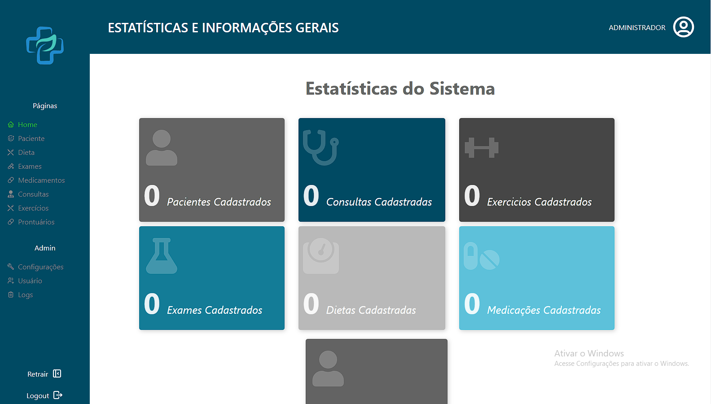
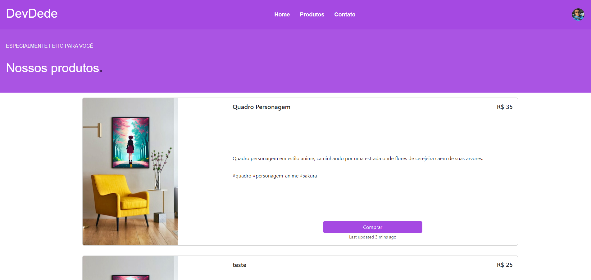
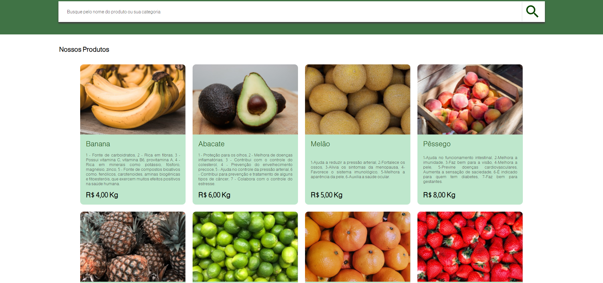

Desde novo sempre tive bastante interesse pela tecnologia, lembro de passar horas tentando descobrir como funcionava a criação de servidores de jogos que jogava na adolescência. Primeiro contato com programação foi com 15 anos a partir do curso Programador de Computador do Senai São José, após o curso, realizei o ensino médio técnico do próprio Senai São José que já havia feito este primeiro curso. Atualmente estou sempre buscando me aprimorar neste processo tive a incrível oportunidade de estar realizando o curso de Fullstack do LAB365 proporcionado pelo programa Floripa Mais Tec iniciativa muito importante que visa disponibilizar educação de qualidade desenvolvendo os profissionais do futuro.
Projeto desenvolvido em squad no terceiro módulo do curso Fullstack do Floripa mais tec. Foi desenvolvido utilizando React.js, Styled Components e Node.js para o backend.
Foi proposto a equipe o desenvolvimento de um sistema no formato white-label, capaz de ser customizado e comercializado para postos de saúde e clínicas particulares em todo o país.
Projeto Frontend de uma página ecommerce, construido com react typescript e styled components para estilização, para carregar os produtos foi utilizado json-server consumindo dados ficticios de um objeto.
Projeto de Ecommerce desenvolvido em squads no terceiro módulo do curso de Fullstack do Floripa mais tec. Foi desenvolvido a parte de frontend do projeto utilizando React.js e Styled Components. A parte de backend foi simulada utilizando o json-server para consumir dados ficticios de um objeto.
Entre em contato comigo pelo email ou através das redes sociais abaixo: